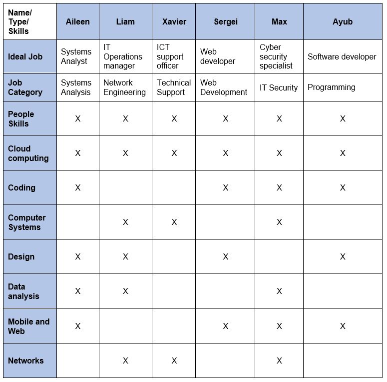

Career Plans
This table displays each group members Ideal job, the category it fits for IT work, and whether it is Operational or sells a product/service.

As we can see in Figure 1, there are many streams of IT careers including, programming, support, web development, computers systems analysis, IT security and network engineering. Interestingly, each one of our group members’ ideal jobs falls under a different category.
To be an IT Operations manager, Liam will require an in-depth knowledge of hardware, operating systems, and technology in general. He will need to research an organisation's requirements and organise rollouts of modern technology, as well as software updates to existing technologies.
Xavier will also require an in-depth knowledge on both hardware and software as an ICT support officer. He will need to diagnose and repair faults quickly to help his clients or end users function and ensure the whole organization runs smoothly.
Ayub and Sergei’s roles are software based and will require vast knowledge of coding. They will use different coding languages, notably JavaScript, Java, Python and C++. They will also need a strong fundamental knowledge of the web development like languages HTML, PHP, and CSS.
|

Figure 1: Different types of Information Technology by Ben Karter, 2019, digital media |
computer systems is necessary. Equipped with this knowledge, he will be able to plan and coordinate defences against such attacks.
All of Exodus team members’ ideal jobs require attention to detail, soft people skills (working with other teams/departments) and adaptability (IT standards, code and software/hardware are ever changing).